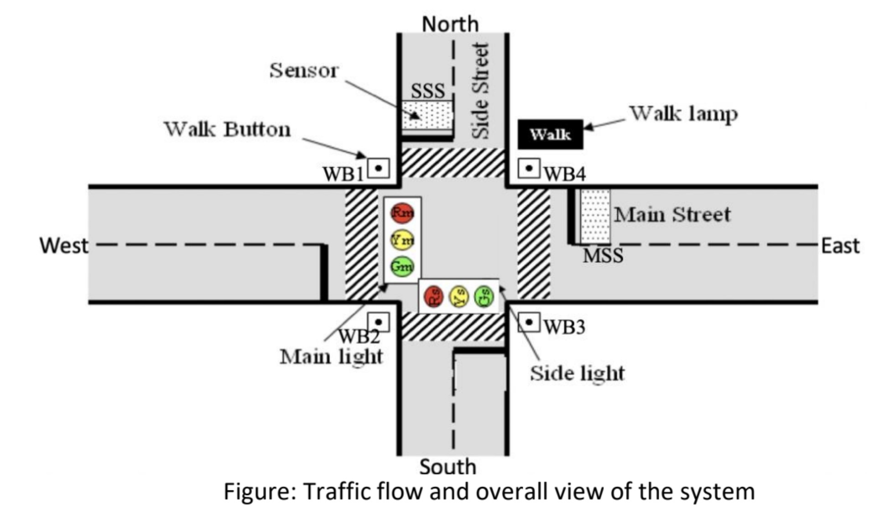

With the pending shipment(due to COVID) of a bluetooth shield and dongle, I'll be creating a cooler drone.
In addition to steering the cooler, I'll be implementing servo motors to integrate a lever arm inside the cooler.
Upon pressing one of the geometrical buttons on the controller you should be able to open and close the cooler.
Utilizes a power booster to step up the voltage from our arduino towards the motors, and the interface of RFID with embedded systems.
Small scale working model, currently fully operational. 42W solar array with a PiJuice Hat working as a backup
energy source to power a Raspberry Pi; miniature model of an XMR crypto currency coin ASIC miner. The model we've built
currently needs to incorporate a blues wireless cellular card to make the self-built ASIC miner fully autonomous.
In the future, will work to scale our design to create a crypto-currency mining farm powered with renewable energy sources.

Wrote a static host webpage onto an NFC tag that displays all of a user's desired information to share;
social media accounts, LinkedIn Profiles, and deeplinks to money sharing applications such as Venmo.
NFC deeplinking to money applications proved difficult as NFC is only available to top-level frames and HTTPS secure browsing contexts.
Worked as Vice President of student organization to connect with community leaders to address issues of gentrification and displacement.
Spearheaded building our webpage and pushing our message out to the SJSU/DTSJ community.
Communicated with different organizations (SVRising, ACLU, etc.) on community needs and how to effectively meet demands.

Utilized Xilinx ISE Design Suite to write in Verilog: a code mimicking the operation of a fourway traffic stop.
Complete with timed loops, car sensors to detect oncoming traffic, and pedestrian walk buttons.
Building an OpAmp based circuit on a breadboard with an NS555 Real Time Clock interfacing with a Piezo motion sensor.
In conjunction with the Real Time Clock, our OpAmp uses an inductor and capacitor to form a DC/DC boost converter.
The boost converter "boosts" the small signal sent from the Piezo motion sensor to our LED; which in turn lights up as it's flicked.